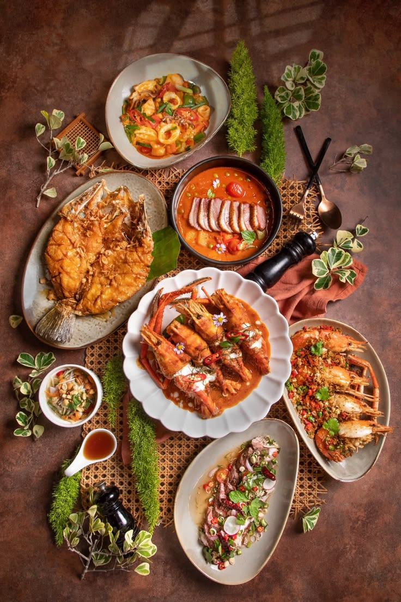

Favorit
↗
Favorit
↗
Yaminlicious
Mie kenyal dengan perpaduan rasa gurih dan manis.
Rp20.000
Pas untuk makan siang
JELAJAHI RASA, TEMUKAN CERITA
Panduan sederhana untuk menemukan kuliner yang menggugah selera. Dari makanan rumahan sampai jajanan favorit, semuanya punya cerita.

MULAI DARI SELERAMU
Pilih jenis sajian yang lagi kamu inginkan hari ini.
DARI YANG GURIH SAMPAI MANIS
Intip beberapa pilihan kuliner untuk menemani harimu.
Favorit
↗
Mie kenyal dengan perpaduan rasa gurih dan manis.
 Pedas favorit
↗
Pedas favorit
↗
Ayam renyah dengan sambal yang menggugah selera.
 Manisnya pas
↗
Manisnya pas
↗
Cookie cokelat dengan tekstur kenyal dan rasa manis.
 Hangat & gurih
↗
Hangat & gurih
↗
Bakso dengan kuah gurih untuk dinikmati kapan saja.